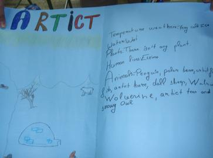
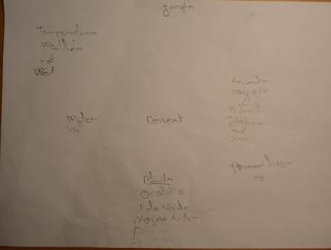
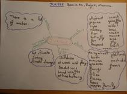

Contributions to http://cliluva-p5-sc-teresa.wikispaces.com/ are licensed under a Creative Commons Attribution Share-Alike 3.0 License. 
Portions not contributed by visitors are Copyright 2018 Tangient LLC
TES: The largest network of teachers in the world
Portions not contributed by visitors are Copyright 2018 Tangient LLC
TES: The largest network of teachers in the world
for the students:SELF EVALUATION SHEET
my students have worked in groups, we made all together a brainstorming with their ideas about the different habitats. then, they worked focused in the habitat ellected. they used diferent kinds of resources in other to obtain information, the final result were mind maps, these are some of them:
  